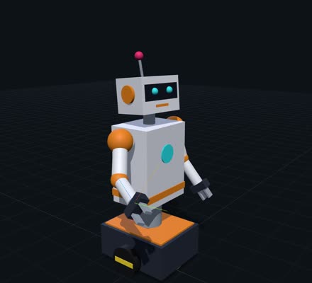
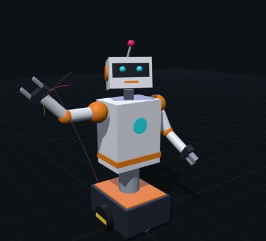
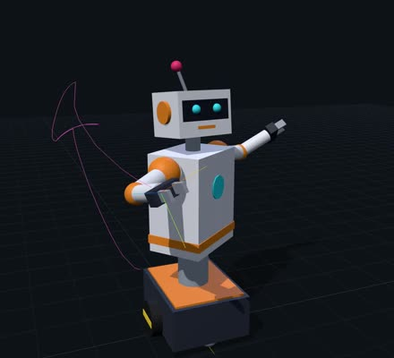
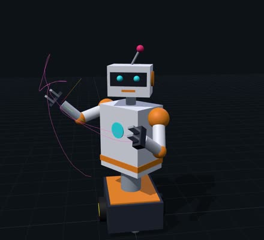
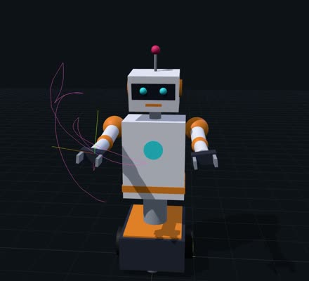
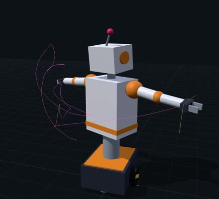
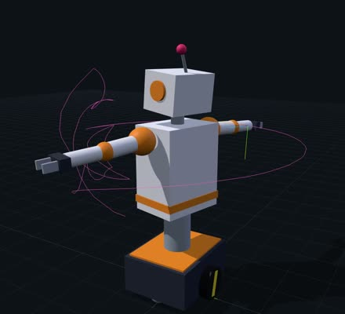
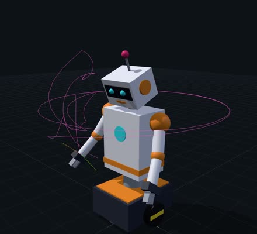

Project 3 · Forward Kinematics
p3_dancerdances a 15-state choreography, posed by my own FK runtime
A wheeled humanoid I described in URDF, moved by a finite state machine and a joint servo,
and drawn in the browser one link at a time from /xform_world.
- Python runtime
- FK math written from scratch
- three.js viewer
- 19 joints · 36 links
One full loop of dancer_routine, 22.5 s at 1920×1080, recorded from my viewer while the runtime ran
make demo. The magenta line is the trail of the right hand. Open the video file.








The robot
A robot made of boxes, cylinders and spheres
p3_dancer is a robot I wrote for this project. It is about 1.2 m tall and uses only primitive visuals with URDF
material colours, so any viewer can draw it without mesh files. It rolls on a wheeled base, lifts its torso, turns at the
waist, and has a head with an antenna and two arms (shoulder, elbow, wrist) that end in two-finger grippers.
I also designed it to exercise the parts of the URDF spec that are easy to get wrong:
- Root is not first
base_linkis the root but not the first<link>in the file, so the root has to come from the joints. - Non-unit revolute axisThe head-pan axis is written
0 0 2and must be normalized before it is used as a rotation axis. - Non-unit prismatic axisThe fingers slide along
±0.25 0 0, deliberately not unit: a prismatic joint movesq · axisexactly as written. - Tilted originsThe wheels get their tilt from an
rpyorigin, and the continuous waist can turn a full 2π.
base_link ├─ l_wheel_joint cont ├─ r_wheel_joint cont └─ torso_lift_joint pris └─ waist_joint cont → torso ├─ head_pan_joint rev │ └─ head_tilt_joint rev │ └─ antenna_joint rev ├─ l_shoulder_pitch_joint rev │ └─ l_shoulder_roll_joint rev │ └─ l_elbow_joint rev │ └─ l_wrist_roll_joint rev │ ├─ l_finger_a_joint pris │ └─ l_finger_b_joint pris └─ r_shoulder_pitch_joint … (mirror of the left arm)
The 16 fixed joints (casters, trim, wheel hubs and decorations) are left out for clarity.
The choreography
dancer_routine: 15 states, one loop in about 19 s
The choreography is a finite state machine. Each state is a joint-space setpoint for all 19 movable joints, and each
state names the transition to take when the robot arrives. The last state leads back to home, so the dance loops.
/joint_trajectory./joint_states shows every joint within ε = 0.03 of the setpoint.on_arrival transition.- 01hold 0.6 shome
Neutral stance, elbows slightly bent.
- 02wavewave_ready
Right arm out and up to 90°, torso rises, head turns toward the hand.
- 03wavewave_out
Forearm swings out, wrist rolls, gripper opens, antenna wobbles.
- 04wavewave_in
Forearm swings back in (elbow 1.8 rad), wrist rolls the other way.
- 05wavewave_out_2
A second wave out.
- 06hold 0.5 sarms_up
Both arms up in a V, torso at its highest (0.19 m), grippers open.
- 07hold 0.2 stwisttwist_left
Waist +0.9 rad; the arms swing opposite and the head counter-turns.
- 08hold 0.2 stwisttwist_right
The mirror image: waist −0.9 rad.
- 09bobhead_bob_down
Head nods down and both elbows fold.
- 10bobhead_bob_up
Head comes back up and the torso rises again.
- 11hold 0.15 sclapclap_open
Both arms straight forward, wrists rolled 90°, grippers open.
- 12hold 0.3 sclapclap_shut
Grippers snap shut.
- 13hold 0.2 sspinspin
Waist and both wheels turn to 2π: one full spin, arms out.
- 14spinspin_back
Waist and wheels unwind back to 0.
- 15hold 0.8 sbow
Head down, arms forward: a bow.
- ↺ home
The loop starts again.
Servo settings for the video: gain 4 per second, speed capped at 3 units per second.
How it runs
Five nodes on my Project 1 middleware
The runtime is written in Python on top of the publish/subscribe hub and rosbridge-style TCP/JSON gateway I built in Project 1.
make demo starts five nodes in one process, and they talk only through the hub, the same way they would over a network.
finite_state_machine
Loads the choreography from fsm/dancer_routine.json and publishes each state's setpoint.
joint_state_publisher
Moves every joint toward its setpoint with a proportional servo (velocity = gain × error, capped,
never overshooting, clamped to the joint limits) and publishes /joint_states.
robot_state_publisher
One transform per joint, T = Torigin(xyz, rpy) · Tmotion(q), on /tf.
Revolute and continuous joints rotate about the normalized axis; prismatic joints slide along the axis as written.
robot_world_state_publisher
Walks the tree from the root, composes Tworld,child = Tworld,parent · Tjoint,
and publishes every link's 4×4 pose on /xform_world as 16 column-major numbers.
The URDF parser, the quaternion and 4×4 matrix math, and the tree traversal are all my own code. As the project requires, no kinematics, transform or URDF-model library is used; the only borrowed piece is Python's standard-library XML parser.
How I drew it
A viewer that trusts the runtime's matrices
The course supplies no viewer, so I built one as an external client of the runtime. A browser cannot open a raw TCP socket,
so a small bridge, viewer_server.py (Python standard library only), connects to the gateway on port 9095 like any other
rosbridge client. It subscribes to /xform_world, /tf, /joint_states, /global_pose
and /fsm/status, and streams them to the page with server-sent events.
The page uses three.js. Each link is a THREE.Group with matrixAutoUpdate = false, and every
/xform_world message is copied straight in. The viewer never corrects a matrix, so any FK mistake would show up on screen.
// scene.js: pose every link from one /xform_world message for (const entry of message.transforms) { const view = this.links.get(entry.child_frame_id); view.group.matrix.fromArray(entry.matrix); // column-major, exactly as published }
Drawing each link
Inside each group the link's first <visual> is drawn at its visual origin with its URDF colour.
Boxes and spheres are drawn as written. Cylinders are turned 90° about x, because three.js cylinders run along +y and URDF
cylinders along +z. The camera is z-up to match URDF.
Recording the video
- Start the runtime with the servo and FSM nodes:
make demo. - Load the robot and deploy the choreography with my script,
tools/demo.py. - Record the 3D canvas with the viewer's Record button (
canvas.captureStreamandMediaRecorder), then add the caption with ffmpeg.
The viewer also has an independent FK self-check, a slider per joint and FSM controls, which I used while debugging.